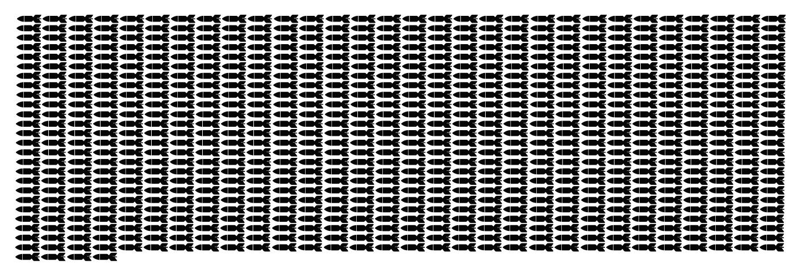

Se registró a 47 kilómetros de profundidad frente a la costa de Antofagasta. El sismo causó graves daños al puerto por un posterior Tsunami. Datos de la catástrofes en la siguiente tabla.
Lugar
Fecha
Magnitud
Muertos
Damnificados
Total Energía Liberada (Megatonelada)
Antofagasta
30-07-1995
8 Richter - 7 Mercalli
3
9115
15,1
¿A qué equivale esa energía liberada? Equivale a 754 bombas de Hiroshima. O sea...
